Welcome to Goa
Must Visit places
1.Calangute
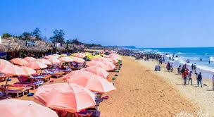2.Fort Aguada
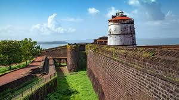3.Dudhsagar Falls
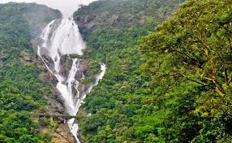4.Deltin Royale Casino
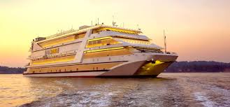5.Basilica of Bom Jesus
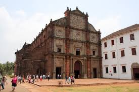6.Baga Beach
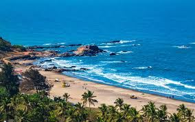Top 10 Tips for First Time Visitors of GOA
1. Practice caution at the Goa beaches
2. Keep an eye on personal stuff
3. Book accommodation in advance
4. Savour Goan cuisine
5. Do not stick to the popular beaches
6. Explore on two-wheels
7. Get active
8. Go beyond the sea and sand
9. Explore both North Goa and South Goa
10.Play the bargaining game right
Activities to Do in Goa
1.Dolphin Drive
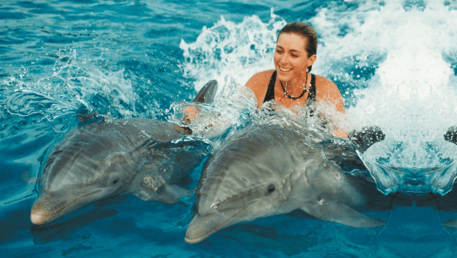Dolphin drive is one of the affordable fun ventures in Goa. Dolphin show is very famous in Goa where people enjoy it a lot. You have to try it once after visiting Goa, as it's a great experience and under one’s budget.
2.Snorkeling
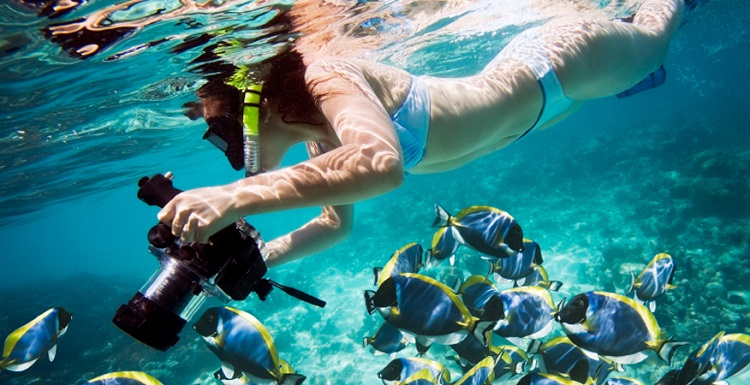Snorkeling is a must while visiting Goa, this is the favourite thing to do among the tourists. For Snorkeling best location in Goa is Goan beach. Snorkelling is the same as swimming but you have to wear equipment like a mask and tube for breathing. Bogmalo beach is a popular place for Snorkeling in south Goa.
3.Scuba Diving
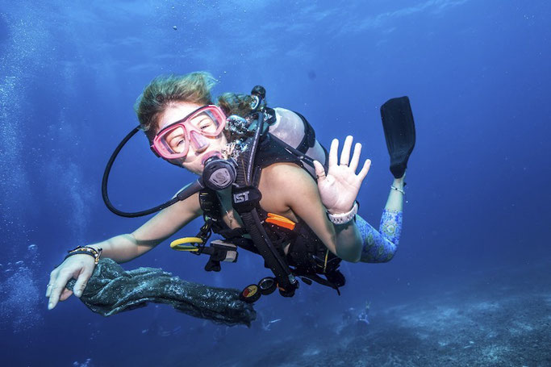Most interesting activity in Goa is Scuba diving and the best place for Scuba diving is Grand Island in South Goa. You’ll be able to see the clear water and the best place for trying all the water activity.
4.Jetlev Flyer
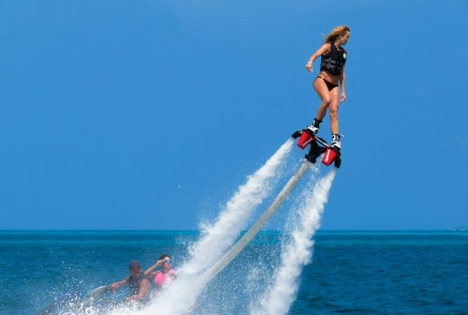You definitely have to experience one of the best adventures by taking Jetlev Flyer. They will give you all the instructions and proper training before heading to this activity. With the pressure of water, you’ll fly high and enjoy the moments in the chapora river.
5.Ocean Trek in Arambol
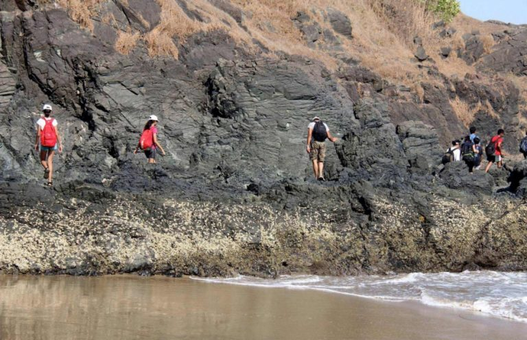This trek starts from grassy paliem towards northern Arambol beach and is famous for its freshwater lake just a few meters from the sea. You can take a dip in a saltwater lake or you can dip yourself in Multani mitti medicinal mud.
Festivals in goa
Goa-'Pearl of the Orient':
Carnival
The most famous of all festivals, the Carnival is the epitome of celebrations in Goa. It is celebrated for three days and three nights and preceded by the month of Lent (February).. Though introduced by the Portuguese colonial rule in the 18th century it is celebrated in Goanese style.
Christmas
Goa is the best place to celebrate Christmas in India. With its Portuguese legacy and Catholic population, Christmas here is celebrated with a gripping fervour. The celebrations, decorations and the carols everywhere are an unforgettable ode to the eyes.
Grape Escapade
Goa hosts Grape Escapade - The Biggest Wine Festival in the country every year in Panjim. The Annual Grape Escapade witnesses wine connoisseurs from all around the world rushing in to savour the delectable flavours of wine and grapes.
Bonderam Festival
Celebrated on the fourth Saturday in August, this festival takes place on the quiet, little island called Divar (12 km from Panaji). During this time, this small island comes alive with people, music, dance and feasts.
Sunburn
Held in December every year at Candolim beach, the Sunburn festival has an array of famous artists performing live. The Electronic Dance Night is an experience to be cherished forever. The ever ending partying spirit is spread over 3 days when each and every person is involved in tapping feet to the beats of legendary personalities. It also has delicious food shacks, markets, and water sports on its list!
Sao Joao Festival
Sao Joao Is one of the most prominent festivals of the Catholic community. Held at the beginning of the monsoon season, this feast honours Saint John the Baptist. It is a fun-filled and colourful experience.
Shopping
1.Tibetan Market on Baga Road
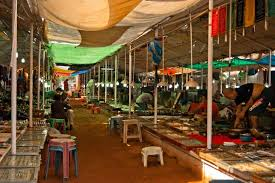Calangute - Baga Rd, near Coffee Day, Umtav Vado, Khobra Waddo, Baga, Goa 403516
2.Flea market at Anjuna Beach
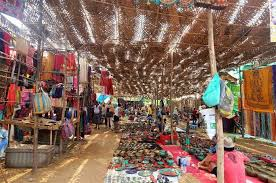Time-tested beachfront flea market open Wednesdays selling eclectic goods, including handmade items.
Address: Dmello Vaddo, Anjuna, Goa 403509
3.Night market at Arpora
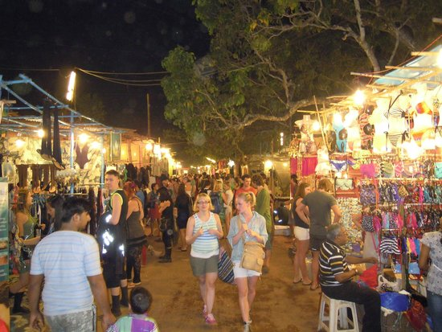Upbeat evening marketplace offering textiles, food stalls, shoes, spices, live music & bars.
Address: H. No. 392 Casa Babu, Aguada - Siolim Rd, near Chauranghinath Temple, Arpora, Goa 403516
Contact
We will be happy to help you!!
@VTG -Virtual Tourist Guide